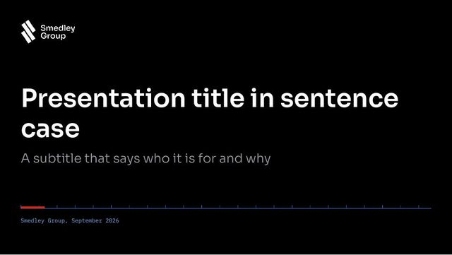
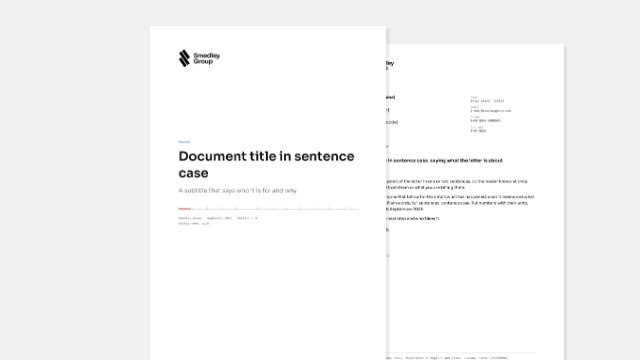
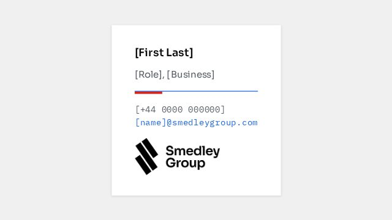
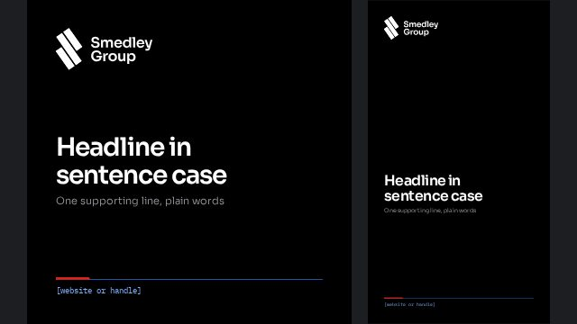

Data logging
Lap-synchronised telemetry from any kart, car or rig, on one timebase.
LoggersFoundations
The mark and its lockups, colour, type, voice, pictures and the one angle everything shares.
One lockup in one colour. Three bars, a two-line wordmark set in Sora SemiBold, a full-height divider, then the division. Its consistency is what lets everything around it move.
Measured in bars, not millimetres
Clear space on all four sides equals the width of one glyph bar. Nothing enters it: type, rules, image edges or charts.
Starting points, adjust to the layout
| Wordmark | Sora SemiBold, two lines, leading 0.94, tracking −0.025 em. Divider 4.6 units wide, 62 tall |
| Interface | Usually top-left of the header, around 150 px wide |
| Slides | Bottom left, 0.36 in tall, as in the slide template |
| Minimum width | 110 px on screen, 30 mm in print |
| Glyph alone | 16 px minimum, for favicons, band marks and the pathway gauge |
Drawn in glyph units, the 56 × 86 artboard
The glyph is built on one module. The long bar is three modules, the short bars two, each offset by one: the F1 bar sits on the first two thirds, the FKL bar on the last two. All three share one width, one pitch and one lean.
| Module | 23.75 |
| Long bar, F4 | 71.3 × 14.2, three modules |
| Short bars, F1 and FKL | 47.7 × 14.2, two modules |
| Pitch and gap | 17.9 centre to centre, 3.7 clear |
| Lean | 55°, drawn at 54.9° in the glyph itself |
| Envelope | 55.0 × 87.0 |
The three bars can leave the wordmark. They always lean the same way
Build it from the kit, never by eye
One mark for the group and one lockup per business. The glyph, the wordmark and the divider never change; only the name after the divider does. Each business leans to the world it works in.
The group itself: corporate, investor and group-wide material.
Hardware and software engineering, for the group and for clients in motorsport, sport and automotive.
Sports data, simulation and modelling for fan engagement.
Driver development: funding drivers promoted from the league into Formula 4.
The global karting series, run by hubs and overseen from the UK.
| Division name | Two lines, set in Sora SemiBold at the same size and leading as Smedley Group |
| Line break | Break where the name reads in two parts: Advanced / Technology, FAT Karting / League, FAT / Racing, Insight / Labs |
| Divider | Always present between the group and the business, 4.6 units wide and 62 tall |
| Order | Group first, business second. Never abbreviated, never stacked vertically |
| Files | Every lockup in white and ink, outlined, in Resources |
Fans, drivers and hubs meet FKL through its own identity: the FAT Pill logo, FKL Blue #0000FF and ST Rapid Black Extended, as set out in the FKL brand guidelines. Use the lockup above only where the group speaks about the league: investor and corporate material, TalentID and internal tools. On FKL's own material the group appears, if at all, as an endorsement. See Co-branding.
Two worlds, one car. Red is the track: speed, heat, the driver and whoever leads. Blue is the garage: the blueprint, the data and the model. They stand on a pure ground, black or white, that belongs to neither. Blue measures, red leads.
Speed and heat. A fill, a line and a depth
Blueprints and data. The same three roles
Red and blue meet only across the 55° cut
Where the two worlds share a space they are joined by the cut, as they are in the glyph's lean: the rule under every introduction opens with a red lead and runs on as a blue scale. Put the ground between red and blue, or the seam. Never set them edge to edge, and never set red type on blue.
Roughly, by context
The ground and the type stay the same everywhere; only the lead changes. Blue can cover ground as line work: a grid, a whole drawing. Red never does. Even on track it stays in marks: boards, the leader, one action, which is why it is always noticed.
| Pairing | Use, contrast |
|---|---|
| White on Race Red | Primary buttons, number boards, the leader. 5.0 : 1 |
| Flame on black, Race Red on white | The subject's line, small marks, large figures. 6.3 : 1 and 5.0 : 1 |
| Line Blue on black, #1F66E0 on white | Drawing lines and annotation. 9.7 : 1 and 5.2 : 1 |
| White on blue | Blue buttons and number boards use #1F66E0 behind white type. 5.2 : 1 |
| Engineering Blue on either ground | References, models, focus rings. 5.7 : 1 on black, 3.7 : 1 on white, marks only |
| Never | Red type on blue, blue type on red, red for an error |
The one scale that runs from one world to the other
Engineering Blue through Steel to Flame. Use it for anything with a temperature or a speed: track maps, tyre and brake heat, pace against the model. Gains and losses still take the flags.
Black, white and the greys between, no hue
The structure stays near neutral: black on dark, white on light, and cool greys between, never tinted enough to read as blue. An earlier navy ground leaned blue and made red a guest; on a pure ground red reads as heat and blue as engineering, equally. Grey tints are Silver, never tinted blue.
Grounds and quiet text
Flag colours. Text on its own tint or on black, never a fill
Green flag for gains, yellow flag for losses, warnings and errors. Red already means the driver, so it never means something went wrong.
Sora in three weights for everything we say, set tight at display sizes. IBM Plex Mono for everything we measure. Weight and size do the work. No italics, no capitals for labels, no third family.
Geometric grotesque, open licence. Numbers are always tabular.
IBM Plex Mono, the readout voice. Open licence, drawn for engineering documents.
From the TalentID dashboard, px
| Role | Weight · size · tracking |
|---|---|
| Hero number | SemiBold 84, −0.05 em |
| Page title | SemiBold 34, −0.68 px |
| Hero name | SemiBold 34, −0.03 em |
| Figure | SemiBold 28, −0.04 em |
| Section title | SemiBold 14, −0.01 em |
| Body and table | Regular 13 |
| Label and caption | Regular 11–12, #9DA1A8 |
| Readout | Plex Mono Medium 11–14, tabular |
| Annotation | Plex Mono Regular 9.5–11.5 |
On a 10 × 5.625 in canvas, pt
| Role | Weight · size · tracking |
|---|---|
| Cover headline | SemiBold 40 |
| Slide title | SemiBold 24 |
| Strapline | SemiBold 13 |
| Lead statement | Regular 14 |
| Card body | Regular 11 |
| Body | Regular 12 |
| Caption | IBM Plex Mono 8 to 10 |
We write the way a good race engineer talks on the radio: the point first, specific, calm under pressure. Plain words, full sentences, and numbers that mean something.
Lead with the conclusion. The reader should be able to stop after the first sentence and still act.
Numbers with units, names with places. 0.18 s, not nearly there. FKL Łódź, not a hub.
Confidence comes from facts, not volume. No exclamation marks, no capitals for emphasis, no hype words.
| Moment | Write | Not |
|---|---|---|
| Headline | Maja is ready for an F4 test day this winter. | UNLEASH YOUR RACING POTENTIAL! |
| Data | 0.18 s off the F4 entry pace, closing by 0.03 s a session. | So close to greatness! |
| Error | The transponder ID is missing. Add it and save again. | Oops! Something went wrong. |
| Action | Add to F4 shortlist | Submit |
| Empty state | Sessions appear here after the first timed lap at a hub. | Nothing to see here yet :) |
| Context | Tone |
|---|---|
| Engineering | Precise and measured. Show the method: what was measured, how, and how sure we are |
| Racing | Direct and energetic, and still factual. Short sentences, present tense, names first |
| Group | Considered and confident. The long view, in the same plain words |
FAT Karting League writes in its own voice, set out in the FKL brand guidelines: direct, bold and future-forward.
The ground is flat: pure black in the dark theme, pure white in the light one. No gradients and no tint, so red and blue are the only colour on the page. Sections are separated by hairlines and space, not boxes.
#000000 on dark, #FFFFFF on light
Page background on every screen and slide. Flat and untinted, so nothing competes with the red and the blue. Raised things are separated by a hairline, not a shade.
Silver at 9 %, behind the one hero element
A soft pool of light replaces the box. The hero sits on the page, lit, not framed. One per view.
Blueprint #0B2D63, ruled in white at 8 px and 40 px
The engineering plate. Drawings, setup sheets, simulations and anything built to a dimension sit on Blueprint blue, ruled in white, in the dark theme and the light one alike. It is the one coloured ground in the system.
Red and blue are marks, never washes
With a flat ground, the two worlds show up only as line work and marks: the red lead and blue scale above, a red board, a blue grid, a Flame trace against a blue reference. No red or blue glow, tint or gradient sits behind anything.
Labels in drawings sit on a patch of the ground
No line ever strikes through a label. Where a centre or dimension line meets text, the text wins.
Silver, solid to 83 %, then fades
Interface dividers, at 14 %. Section openers use the red and blue scale rule instead.
F1 full-wet print, 24 % Silver
Marks what is not yet done: the empty part of a progress glyph and running progress. Never decoration.
Inspired by Pirelli's F1 full wet tyres
Every tyre in the system wears the same tread, drawn after the Pirelli Cinturato full wet used in Formula 1: shoulder blocks split by lateral grooves and fine sipes, two channels running round the tyre, and deep swept grooves that curve back from the centre to pump water out to the sides. The two halves are staggered by half a pitch, as on the real tyre. It is the pattern a car needs when grip is hardest to find, which is the point.
The tyre carries the tread and the ground carries its print, and both point the same way: the tip of the V leads, in the direction of travel, so it cuts into the water first. The same print fills the unfinished part of the pathway glyph.
An optional closing line. When used, it states the conclusion rather than a caption
Pictures show real people and real machines doing real work. Documentary, not staged. The colour comes from the brand's marks, never from a grade laid over the picture.
| Engineering | Hands, parts, screens and measurement. Macro detail, a sensor on a bench, a drawing under a lamp |
| Racing | Drivers in helmets, karts at speed, the grid and the paddock. People first, then machines |
| Light and grade | Available light, hard shadows welcome. True colour, no red or blue tint, no filters |
| Crop | Tight for intensity, wide for context. Where there is motion, let it run top-left to bottom-right, with the glyph |
| Type on pictures | Only over a quiet area, never over a face. A black scrim up to 40 % where it is needed |
Every accent is cut at the glyph's own lean and leans the same way, top-left to bottom-right. If it marks, selects or measures, it carries the cut.
| Angle | 55° from horizontal, 35° from vertical |
| Vertical markers | transform: skewX(35deg) |
| Bar and button ends | clip-path: polygon(0 0, calc(100% - c) 0, 100% 100%, c 100%), c = height × 0.7. Set the height, never a fixed cut |
| Direction | Always with the glyph. A mirrored cut reads as a different brand |
Two worlds
Racing and engineering: what each brings, where each leads, and how the mark moves between them.
The mark is earned on track and proven in the garage. Under the core identity sits a technical layer taken from four places we work: the drawing office, the workshop, the pit wall and the track. Use each where something is being measured, built, read or raced. Never as wallpaper.
Blueprint ground, white grid at 3 % and 7.5 %
The grid lives on drawings, not pages: drawings sit on Blueprint blue, ruled in white on the 8 px module and heavier every 40 px, so parts can be read off it. Everywhere else the ground stays clear. The grid is paper, not pattern.
Drawings carry a title block: sheet, subject and date, in mono, in ruled cells. The rule under each introduction is a scale, ticked every 40 px.
| Sample | Line | Use |
|---|---|---|
| Object line | White, 1.25 px. What exists: the outline of the part. | |
| Construction line | Line Blue at 50 %, 0.75 px. How it was set out: modules, envelopes, extensions. | |
| Centre line | Line Blue, long and short dash. Axes and symmetry. | |
| Hidden or planned | White at 50 %, dashed. What is out of sight or not built yet. | |
| Dimension | Line Blue, ticks at 55° that always lean with the glyph, never arrowheads. Value in mono above the line. | |
| Callout | A dot on the part, a shelf to the label. Balloons name items in a set. |
24 px grid, 1.5 px stroke, round ends
Drawn like the interface icons, on the same keylines. One rule gives them the brand: hand tools lean with the glyph, at 55°, top-left to bottom-right. Instruments sit level, because they read true. Tool icons mark engineering work: setup, service, hardware and data. They are not general-purpose symbols.
| Lean | rotate(55deg) about the centre, hand tools only |
| Live area | 20 px inside the 24 px square, one idea per tool |
| Sizes | 16, 20 and 24 px in interface, 72 px on plates |
The kart in plan view, front at the top, dimensions in mm
Object lines for the kart, centre and dimension lines outside it, one big figure per corner on a leader to its tyre. The same drawing works for a chassis, a sensor housing or a simulator rig.
Qualifying, FKL Łódź, cadet
| Pos | Driver | Best | Gap | S1 | S2 | S3 |
|---|---|---|---|---|---|---|
| 1 | KOWMaja Kowalczyk | 1:02.418 | Leader | 20.904 | 20.771 | 20.743 |
| 2 | HARLeo Hartmann | 1:02.521 | +0.103 | 20.951 | 20.868 | 20.702 |
| 3 | MEHAarav Mehta | 1:02.977 | +0.559 | 20.887 | 21.101 | 20.989 |
The leader's position board goes red. The fastest time in each sector is the only green on the screen.
Value, then unit, in IBM Plex Mono
Anything read off an instrument is set in mono: lap and sector times, channels, units, coordinates and axis ticks. Values keep a true minus and a fixed number of decimals so columns never jitter. Hero figures stay in Sora SemiBold.
Marks a place: a sheet, a grid slot, a position. A solid board with the number knocked out, cut at 55° both ends.
Marks a limit coming up: the F4 entry band, a budget cap, a track limit. Race Red and white at 55°, as painted at the apex.
Marks a finish, and only a finish: the last sheet, a completed flow, a final result. Chequers lean at 55°.
Both worlds are always present; the context decides which one leads. In the garage blue leads and red is the single mark of intent. On track red leads and blue is the single line of reference. Neither ever disappears, and neither ever shares the lead.
| Context | Leads | Supports, once per view | Where |
|---|---|---|---|
| Engineering | Engineering Blue fills, the blueprint grid, construction and dimension lines, blue number boards | Red as the lead of the scale rule, or the one live value | Advanced Technology, Insight Labs, technical documents, specs, product pages |
| Racing | Race Red fills, red number boards, kerbs, chequers, speed streaks, the leader | Blue as the reference line: the pace to beat, the model, focus | FAT Karting League, FAT Racing, events, results, fan and driver content |
| Group | Neither: the ground, white and the logo | Red and blue in balance, meeting at the seam | Smedley Group, investor and corporate material, this book |
An Advanced Technology product page
Sensors, loggers and simulation built for motorsport, then proven for clients in sport and automotive. Every part is drawn, measured and tested before it reaches a car.
The hero sits on the blueprint grid with its drawing. Blue carries the actions and the numbering, readouts are mono. The only red is the lead of the scale rule.
A FAT Karting League championship page
Eighteen cadets, one electric grid, and a championship three points wide. Qualifying runs Thursday at 16:00.
Sat 26 Sep, junior final, 22 drivers
Fri 6 Nov, night race, 20 drivers
Sat 5 Dec, all classes, title decider
Speed streaks behind the hero, red boards for rounds, the leader in red and a chequer to close the fold. The only blue is the reference pace under the tower.
The mark is made on track and measured in the garage. Three tyres brake, their skids burn red and cool into the bars, and blue construction lines set the glyph at its lean. Motion always decelerates like a car on the brakes.
Three tyres drop in, rolling a tread print inspired by Pirelli's F1 full wets behind them, under one fixed light. Each sits on three shadows that swing round as it passes under the lamp.
At the start of each bar the tyres lock. The tread smears into skid rubber that glows Flame, white-hot where the tyre stops, and smoke rolls off the shoulders. This is the track's half of the mark.
The tyres pull away. The rolling print lifts and the three skids cool from Flame into white bars.
As the bars lean to 55°, the drawing office arrives: Line Blue centre lines run along them, the three module lines cross them and the angle is marked. This is engineering's half.
The construction clears. The glyph slides left while the wordmark wipes in from the left, as one piece.
One slow light crosses the words, blue leading into red, the two worlds meeting once. Then stillness.
| Brake | cubic-bezier(.16, 1, .3, 1), for anything arriving |
| Lean | Ease-out with a light overshoot, 0.9 s |
| Gauge fill | 1.0 s quint-out, bar by bar |
| One moment per view | No loops outside loaders, no blinking, no hover choreography |
| Reduced motion | Show the end state immediately |
The three bars are the three rungs of the ladder. One value runs through them in order, so a driver becomes the whole logo only on reaching F1.
of the way to F1. Filled bars are solid ink: white on dark, black on light. The bar in progress carries a Flame leading edge, the hot front of the run. What is left shows the wet-weather tread print.
Interface
Every control, screen and chart, built from the foundations.
Everything a person presses, types into or chooses. Red means active, the 55° cut marks the choice, and nothing hides in a box it does not need.
One Race Red primary per view. Secondary is a 10 % tint of the ink. Text buttons for low-weight actions.
Destructive actions use the yellow flag as text on its tint. Red is never a warning.
Icon buttons take the button's cut, with the icon kept upright; a pressed one goes red. Buttons that belong together touch: their cuts run parallel 3 px apart, so the group reads as one bar. The loader is the glyph, its bars lighting Flame in turn. Loaders are the only looping motion in the system.
The icon leads the label, 16 px, 8 px gap, in the button's own colour. Workshop tools for engineering actions, plain strokes for everything else. A trailing arrow only ever means go on.
Square, 44 px tall, bracketed at the corners like a drawing frame. Focus draws the seam along the base: a red lead, then the blue rule. Measured values are set in mono with the unit inside the field.
Errors turn the brackets and rule yellow and say what is wrong and how to fix it, under the field.
The selected radio carries one bar of the glyph.
A start that matters gets start lights: five reds, one every 250 ms, then lights out and the button reads live.
Irreversible actions build pressure like a brake pedal: hold for one second. Let go early and nothing happens.
Hover sends one light pass across at 55°, text links draw the seam, arrows drive on. Press dips like a car on the brakes.
| Moment | Motion |
|---|---|
| Hover | One light pass at 55°, 700 ms brake. Icons answer for their tool: spanners turn, downloads drop, arrows drive on |
| Press | Scale to 96.5 %, 80 ms, straight back |
| Focus | The seam draws along the base: red lead in 350 ms, blue rule in 600 ms |
| Change of state | Indicators slide and brake, 450 ms. Checks and marks pop from 60 %, 320 ms. Toggles overshoot once |
| Commit | Start lights for launches, one second of held pressure for anything that cannot be undone |
| Reduced motion | No sheen, no pops, no slides: every state changes at once |
Red is the driver, blue is the engineering: the reference, the line to beat and the model's uncertainty. Alloy and Steel are the field. Bars end in the 55° cut and points are small glyph bars. Ticks and readouts are in mono. No gradient washes, no rainbow series.
Four channels on one distance axis, sectors as centre lines. Move along the trace, or along the track, and every channel reads out at once.
The lap is simulated from the circuit's own curvature, so braking zones fall where the corners are.
The model takes out the conditions. What is left, below the band, is the driver.
Gains and losses differ by shade, and the numbers carry the signal colour.
Totals as bars, the pattern as a ranked list. Two plain answers instead of one dense grid.
Three bars at the glyph's 55° lean. Only the length changes.
Dates are chosen the way everything else is: a red cut marks the pick, blue marks today, and a small bar under a day means something is booked.
Pick a start and an end day to select a range.
Booked sessions are tinted blocks. The next session, the one that leads the day, goes red.
Layers that sit above the page, and the system carried into a phone app, an app icon, a browser tab and an email.
Maja Kowalczyk will leave the F4 winter shortlist. Her sessions and notes stay in TalentID.
A 0 to 100 score of performance with kart, weather and track effects removed.
The glyph alone, centred at 36 % of the tile, on the black ground. Browser tabs use the light tile, or the dark one on dark browser themes.
Maja Kowalczyk from FKL Łódź passed an index of 90 this week and is now 57 % of the way to F1.
Open her profileEmail and print flip to Canvas and Ink. The header stays black.
In practice
How it comes together on screen, on cars and kit, and with partners, the rules that keep it together, and the files to build with.
Two layouts as built: the TalentID dashboard and the slide template. They show one way the system comes together, a hero with quieter content around it and a conclusion at the end. They are examples, not a grid to obey.
TalentID at 1440 px: a header, the page title with its period control, readouts in four, then ranking, hero and profile at 1, 1.3 and 0.95 fractions, hubs and a closing strapline. Below 980 px the hero moves above the ranking; below 640 px everything stacks.
The PowerPoint template, 10 × 5.625 in
| Side margin | 0.46 in |
| Title | y 0.44 in, Sora SemiBold 24 pt, one per slide, sentence case |
| Content | y 1.12 to 4.22 in |
| Columns | Four at 2.05 in with 0.27 in gutters, 9.01 in in all |
| Strapline band | y 4.37 in, 0.45 in tall, full bleed, optional |
| Logo | y 4.99 in, 0.36 in tall, bottom left |
| Layouts | Cover, section, content light and dark, blueprint, closing. Download the template |
Measurements above describe the examples as built. Keep the logo's clear space, the type, the colour and the 55° cut; everything about placement is open.
TalentID, the Advanced Technology scouting dashboard, built from the components in this book: timing-screen ranking, mono readouts, the glyph as progress, the reference line to beat and one red action. Pick a driver in the ranking.
Every FKL driver, with kart, weather and track taken out.
Live sample with placeholder data.
The system away from the screen: on cars, race kit, the track and the paddock. Each one follows the same few rules: black or white ground, one red lead, blue where something is measured, and every cut at 55°.
Concept renders made with AI image generation, for direction and mood. Details such as vehicle shapes are invented, and the artwork is approximate: production work uses the files in Resources.
When we work with a partner, both marks share one line, equal in weight and separated by the divider. When a business has its own identity, the group steps back to a quiet endorsement.
Group first, divider, partner
| Height | The partner mark matches the divider: 62 units tall at most, optically equal to the wordmark |
| Colour | Both marks in one colour, white or ink. No partner colours inside the lockup |
| Order | Group first. A title partner of an event goes first on that event's material |
For businesses with their own identity, such as FKL
| Form | The glyph and one line, Part of Smedley Group, in Sora Regular |
| Size | Smaller than the host brand's logo, never above it, usually in the footer or the credits |
| Host brand | Everything else follows the host's own guidelines, including its colours and type |
The handful of rules that keep the system coherent when someone new builds the next screen.
Avoid a third typeface, mono set as paragraphs, tools that lean against the glyph, chequers on anything unfinished, drop shadows or bevels, signal colours as fills, red for errors, red as a wash or a ground, red and blue edge to edge, coloured gradients or glows (the temperature ramp for data is the one exception), a tinted ground, cuts that lean against the glyph, blinking or looping motion, boxed heroes in running content, dotted meta strings, and a strapline that restates the title.
Everything in this book, ready to build with. Logo files are outlined, so they need no fonts installed; templates are set in Sora and IBM Plex Mono, so install both first.
Logos for every business, the glyph and app icons, colour tokens, tool icons and all templates.


App icons for iOS and Android: dark and light, 1024 px SVG.




Both themes, the fixed colours and the 55° cut, as custom properties or data.
Sora for what we say, IBM Plex Mono for what we measure. Both open licence.
24 px, 1.5 px stroke. Click an icon to download its SVG.
What changed, newest first
| 2.3 26 Sep 2026 | Layout drawn as built, the stylesheet regrouped by component, contrast raised to WCAG AA across both themes, headings and landmarks put in order |
| 2.2 25 Sep 2026 | Brand showcase: concept renders of the system on cars, race kit, the track and the paddock |
| 2.1 25 Sep 2026 | Business lockups, voice, imagery, co-branding and resources. Mobile version, keyboard focus on cut controls, search and links to any heading, print styles, templates |
| 2.0 25 Sep 2026 | Racing red and engineering blue on a pure black or white ground, dark and light themes, race engineering, usage context, the reworked hero and the four-part structure |
| 1.0 24 Sep 2026 | First edition: the logo, colour, type, the 55° cut, motion and the interface kit |
Who keeps this book
| Owner | Smedley Group, Advanced Technology |
| Contact | mateusz.jaskiewicz@smedleygroup.com |
| Changes | Proposed as a pull request against the brand book repository, reviewed before they are published |
| Source | github.com/Smedley-Group-Advanced-Technology/brand-book-sg |
{kind=link}
{kind=link}
{kind=link}
{kind=link}
{kind=link}
{kind=link}
{kind=link}
{kind=link}
{kind=link}
{kind=link}
{kind=link}
{kind=link}
{kind=link}
{kind=link}
{kind=link}
{kind=link}
{kind=link}
{kind=link}
{kind=link}
{kind=link}
{kind=link}
{kind=link}
{kind=link}
{kind=link}